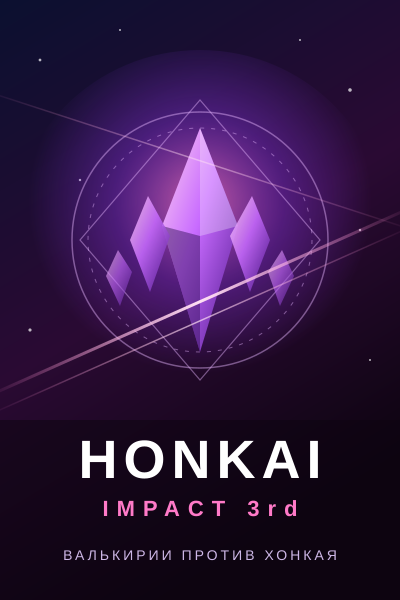

ARC-01Хонкай
Загадочная сила, которая веками обрушивает на человечество катастрофы, порождает чудовищ и заражает людей. Цивилизация живёт в постоянной обороне.
ГЛАВНАЯ / АНИМЕ ИГРЫ / БРИФИНГ: HONKAI IMPACT 3RD
Динамичная экшен-RPG от miHoYo (HoYoverse) о Валькириях, которые сражаются с Хонкаем — силой, способной уничтожить цивилизацию. Стремительные бои, кинематографичный сюжет и мрачная научная фантастика за яркой аниме-картинкой.

Honkai Impact 3rd — трёхмерный слэшер с элементами RPG. Игрок — капитан боевого корабля — собирает отряд из трёх Валькирий и ведёт их через главы сюжета, боссов и испытания, переключаясь между героинями прямо в бою.
Игра вышла в 2016 году и с тех пор регулярно обновляется: каждая крупная версия добавляет главы истории, новых Валькирий, события и режимы. Сюжет подаётся через анимационные ролики, комиксы и интерактивные эпизоды — серия славится кинематографичной постановкой.
После завершения первой большой сюжетной арки история продолжилась во второй части, а вселенную Honkai позже развила Honkai: Star Rail.
| developer | miHoYo (HoYoverse) |
|---|---|
| release | 2016 (Китай), затем весь мир |
| genre | Экшен-RPG, слэшер |
| platforms | Android, iOS, ПК (Windows) |
| model | Free-to-play, гача |
| engine | Unity |
Мрачная научная фантастика, где за яркой аниме-картинкой стоят катастрофы, жертвы и вечная борьба «за всё прекрасное в этом мире».
ARC-01Загадочная сила, которая веками обрушивает на человечество катастрофы, порождает чудовищ и заражает людей. Цивилизация живёт в постоянной обороне.
ARC-02Воплощения Хонкая с огромной властью — главные угрозы сюжета. Их пробуждение способно стереть целые города, а их ядра — величайшая тайна мира.
ARC-03Древняя организация «Шиксаль» готовит Валькирий — бойцов, чьё тело выдерживает силу Хонкая. Им доверяют самые опасные операции.
ARC-04Школа Валькирий, где начинают путь главные героини. Учёба, дружба и тренировки — передышка между сражениями.
ARC-05Боевой корабль-база отряда. Отсюда капитан — сам игрок — отправляет Валькирий на задания по всему миру.
ARC-06До нынешней цивилизации существовала другая, проигравшая войну с Хонкаем. Её герои и наследие — ключ ко многим загадкам сюжета.
Бой строится на уклонениях, комбо и смене героинь: правильная команда и тайминг важнее «прокачки ради прокачки».
Стрелка указывает, кого тип побеждает. QUA и IMG — особая пара, сильная друг против друга.
Главы основной истории с катсценами, диалогами и боссами. Многие главы — полноценные эпизоды со своей атмосферой и механиками.
Крупные исследуемые локации со своими заданиями, головоломками и сюжетом — передышка от коротких боевых этапов.
Соревновательный режим с еженедельными боями: игроки поднимаются по лигам, проходя сложные этапы с ограничениями.
Сражения с сильными боссами на время. Результат влияет на рейтинг — нужна точная команда и знание паттернов врага.
Режим в духе рогалика: забег с выбором усилений-печатей, где каждая попытка складывается по-новому.
Гильдии игроков, совместные рейды против боссов и командные события.
У многих героинь несколько боевых форм — отдельных персонажей со своими навыками. Ниже — основные лица истории без подробных спойлеров.
Неунывающая, упрямая и бесконечно добрая Валькирия. Её судьба тесно связана с тайной Хонкая — именно вокруг неё строится главная история.
Спокойная и заботливая девушка с катаной и силой молнии. Ради близких готова на всё — её линия одна из самых драматичных.
Немногословная любительница видеоигр и инженерный гений. Сражается огромными боевыми машинами собственной разработки.
Командир отряда и учитель героинь. Взрослая, решительная, владеет тяжёлым мечом — сердце первых глав истории.
Глава Академии Святой Фрейи, выглядящая как ребёнок. Заботится о Валькириях как о семье и сражается гигантским крестом-оружием.
Мастер боевых искусств и наставница с очень долгой историей. Сдержанная снаружи, она хранит память о прошлых эпохах.
Робкая и нежная девушка, у которой есть вторая, дерзкая и опасная сторона. Вместе они учатся доверять друг другу.
Обаятельная героиня древнего отряда, сражавшегося с Хонкаем задолго до нынешних событий. Одна из любимиц фанатов.